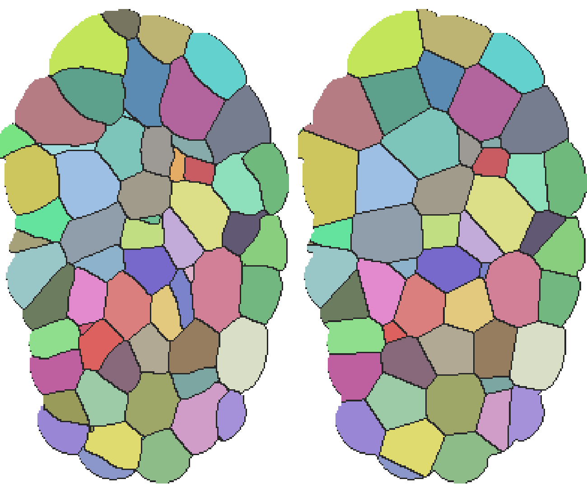
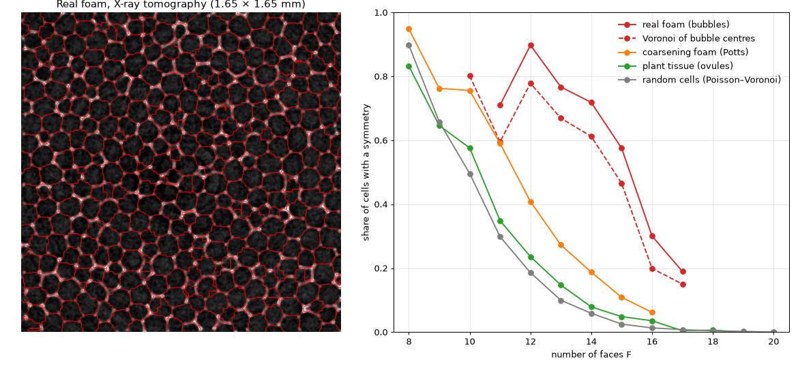

Cells in a plant tissue fill space without gaps, and each is close to a polyhedron. How many faces do they have? Is a tissue simply the Voronoi tessellation of its cell centres, or the Voronoi tessellation of random points? We measured this on 57 manually proofread 3D segmentations: 31 Arabidopsis ovules and 26 lateral root primordia.

A slice through an ovule. Left: the real cells. Right: the same slice through the 3D Voronoi tessellation of the cell centres; each cell has the same colour in both halves. 80% of the pixels fall in the same cell. Note the small cells that disappear and the straight Voronoi walls.
What was known
3D face counts and the Euler, Lewis and Aboav–Weaire relations were measured in a mouse lung epithelium (Gómez, Iber et al., eLife 2021); 3D connectivity networks in the shoot meristem (Jackson et al. 2019).
The Voronoi tessellation of nuclei as a model of epithelia was tested in 2D (Sánchez-Gutiérrez et al. 2015, fly and beetle embryos).
We found no 3D test of “tissue vs Voronoi of its cell centres” on large segmented plant data.
How we computed it
From each labelled volume we take the contact area of every pair of neighbouring cells, using the real voxel size.
A neighbour counts as a face if the contact is at least 1% of the cell surface; we also give numbers without a threshold.
Only cells that are completely inside the volume count: 17 827 in ovules and 325 in roots.
We compare with the 3D Voronoi tessellation of the centres of the same cells, and with Voronoi cells of random points (Poisson–Voronoi), using the same threshold.
Results
Ovules
Root primordia
Voronoi of the same centres
Random points
faces, all contacts
15.2 ± 3.9
14.0 ± 3.9
14.7 ± 2.3
15.6 ± 3.3
faces, ≥ 1% of surface
12.6 ± 2.8
11.6 ± 3.0
12.0 ± 1.9
12.0 ± 2.4
same neighbours as Voronoi of centres
70%
59%
–
–
Ovules: share of cells by number of faces (all contacts)
real cellsVoronoi of the same centresrandom points
побочный проект · готово: 57 объёмов тканей
Клетки в тканях: живое разбиение пространства
Клетки растительной ткани заполняют пространство без щелей, и каждая близка к многограннику. Сколько у них граней? Ткань — это просто разбиение Вороного центров её клеток или разбиение Вороного случайных точек? Мы измерили это на 57 трёхмерных сегментациях, проверенных вручную: 31 семязачаток Arabidopsis и 26 зачатков боковых корней.
Срез семязачатка. Слева — настоящие клетки. Справа — тот же срез 3D-разбиения Вороного центров клеток; у каждой клетки одинаковый цвет на обеих половинах. 80% пикселей попадают в ту же клетку. Видно, как исчезают мелкие клетки и как выпрямляются стенки.
Что было известно
Число граней в 3D и соотношения Эйлера, Льюиса и Абоава–Уэйра измеряли в эпителии лёгкого мыши (Gómez, Iber et al., eLife 2021); сети соседства в 3D — в апикальной меристеме (Jackson et al. 2019).
Разбиение Вороного по ядрам как модель эпителия проверяли в 2D (Sánchez-Gutiérrez et al. 2015, эмбрионы мухи и жука).
3D-проверки «ткань против Вороного центров её клеток» на больших сегментированных растительных данных мы не нашли.
Как считали
По каждому размеченному объёму считаем площадь контакта для каждой пары соседних клеток с учётом настоящего размера вокселя.
Сосед считается гранью, если контакт занимает не меньше 1% поверхности клетки; числа без порога тоже приводим.
Учитываем только клетки, целиком лежащие внутри объёма: 17 827 в семязачатках и 325 в корнях.
Сравниваем с 3D-разбиением Вороного центров тех же клеток и с ячейками Вороного случайных точек (Пуассона), с тем же порогом.
Результаты
Семязачатки
Зачатки корней
Вороной тех же центров
Случайные точки
граней, все контакты
15,2 ± 3,9
14,0 ± 3,9
14,7 ± 2,3
15,6 ± 3,3
граней, ≥ 1% поверхности
12,6 ± 2,8
11,6 ± 3,0
12,0 ± 1,9
12,0 ± 2,4
соседи совпадают с Вороным центров
70%
59%
–
–
Семязачатки: доля клеток по числу граней (все контакты)
настоящие клеткиВороной тех же центровслучайные точки
proyecto paralelo · hecho: 57 volúmenes de tejido
Células en tejidos: una teselación viva del espacio
Las células de un tejido vegetal llenan el espacio sin huecos, y cada una se parece a un poliedro. ¿Cuántas caras tienen? ¿Es un tejido simplemente la teselación de Voronói de los centros de sus células, o la de puntos aleatorios? Lo medimos en 57 segmentaciones 3D revisadas a mano: 31 óvulos de Arabidopsis y 26 primordios de raíz lateral.
Un corte de un óvulo. Izquierda: las células reales. Derecha: el mismo corte de la teselación de Voronói 3D de los centros de las células; cada célula tiene el mismo color en las dos mitades. El 80% de los píxeles cae en la misma célula. Se ven las células pequeñas que desaparecen y las paredes que se vuelven rectas.
Qué se sabía
El número de caras en 3D y las relaciones de Euler, Lewis y Aboav–Weaire se midieron en un epitelio de pulmón de ratón (Gómez, Iber et al., eLife 2021); las redes de conectividad 3D, en el meristemo apical (Jackson et al. 2019).
La teselación de Voronói de los núcleos como modelo de epitelio se comprobó en 2D (Sánchez-Gutiérrez et al. 2015, embriones de mosca y escarabajo).
No encontramos ninguna prueba 3D de «tejido frente a Voronói de los centros de sus células» con grandes datos vegetales segmentados.
Cómo lo calculamos
En cada volumen etiquetado medimos el área de contacto de cada par de células vecinas, con el tamaño real del vóxel.
Un vecino cuenta como cara si el contacto ocupa al menos el 1% de la superficie de la célula; también damos los números sin umbral.
Solo cuentan las células enteramente dentro del volumen: 17 827 en óvulos y 325 en raíces.
Comparamos con la teselación de Voronói 3D de los centros de las mismas células y con celdas de Voronói de puntos aleatorios (Poisson), con el mismo umbral.
Resultados
Óvulos
Primordios de raíz
Voronói de los mismos centros
Puntos aleatorios
caras, todos los contactos
15,2 ± 3,9
14,0 ± 3,9
14,7 ± 2,3
15,6 ± 3,3
caras, ≥ 1% de la superficie
12,6 ± 2,8
11,6 ± 3,0
12,0 ± 1,9
12,0 ± 2,4
vecinos iguales que en Voronói de los centros
70%
59%
–
–
Óvulos: proporción de células por número de caras (todos los contactos)
células realesVoronói de los mismos centrospuntos aleatorios
Lewis law in 3D: mean cell volume (relative to the average) by number of faces
Закон Льюиса в 3D: средний объём клетки (относительно среднего) по числу граней
Ley de Lewis en 3D: volumen medio de la célula (relativo a la media) por número de caras
Cell types: complete topology
The number of faces does not determine a polyhedron. Two cells with 14 faces can be arranged differently. Following Lazar et al. (PRL 2012), who introduced this for grains and bubbles and applied it to simulated grain growth, we reconstructed each cell’s polyhedron from triple and quadruple junctions and computed its canonical code (the Weinberg vector). Two cells have the same type exactly when their codes coincide. The topology could be reconstructed for 51% of the 17 778 inner ovule cells, or 62% with a careful repair of nearly degenerate vertices; both variants give the same answers.
Faces F
Tissue
Voronoi of the same centres
Random points
10
0.58; 66
0.65; 47
0.50; 70
11
0.35; 91
0.39; 80
0.30; 111
12
0.24; 121
0.27; 112
0.19; 140
13
0.15; 142
0.15; 135
0.10; 149
14
0.08; 147
0.08; 145
0.06; 149
15
0.05; 149
0.04; 149
0.03; 149
Each cell: the share of cells with non-trivial symmetry; the number of different types among 150 random cells with that F.
At a fixed number of faces, tissue cells are as symmetric and as diverse as the Voronoi cells of the same centres. Both are slightly more symmetric than random points. Overall, 20% of tissue cells are symmetric against 10% for the Voronoi of the centres, but the whole difference comes from the many small cells in the tissue.
Tissue does not behave like metal grains. In grain growth, symmetric cells are orders of magnitude more common than in random Voronoi cells; in tissue the excess is at most 1.5×.
What does stand out is small cells: the most common types in tissue are a 6-faced cell (1.1% of cells), the triangular prism (0.8%) and even the tetrahedron (0.3%). Both Voronoi models have almost none of them.
Типы клеток: полная топология
Число граней не определяет многогранник. Две клетки с 14 гранями могут быть устроены по-разному. Вслед за Лазаром и др. (PRL 2012), которые предложили этот способ для зёрен и пузырей и применили его к симуляции роста зёрен, мы восстановили многогранник каждой клетки по тройным и четверным стыкам и посчитали его канонический код (вектор Вайнберга). Две клетки одного типа тогда и только тогда, когда их коды совпадают. Топологию удалось восстановить у 51% из 17 778 внутренних клеток семязачатков, у 62% с аккуратной починкой почти вырожденных вершин; оба варианта дают одинаковые ответы.
Граней F
Ткань
Вороной тех же центров
Случайные точки
10
0,58; 66
0,65; 47
0,50; 70
11
0,35; 91
0,39; 80
0,30; 111
12
0,24; 121
0,27; 112
0,19; 140
13
0,15; 142
0,15; 135
0,10; 149
14
0,08; 147
0,08; 145
0,06; 149
15
0,05; 149
0,04; 149
0,03; 149
В каждой ячейке: доля клеток с нетривиальной симметрией; число разных типов среди 150 случайных клеток с этим F.
При одинаковом числе граней клетки ткани так же симметричны и так же разнообразны, как ячейки Вороного тех же центров. И те и другие немного симметричнее случайных точек. В целом симметричны 20% клеток ткани против 10% у Вороного центров, но вся разница — от множества мелких клеток в ткани.
Ткань не похожа на зёрна металла. При росте зёрен симметричные клетки встречаются на порядки чаще, чем у случайных ячеек Вороного; в ткани превышение не больше чем в 1,5 раза.
Выделяются мелкие клетки: самые частые типы в ткани — 6-гранная клетка (1,1% клеток), треугольная призма (0,8%) и даже тетраэдр (0,3%). У обеих моделей Вороного их почти нет.
Tipos de células: topología completa
El número de caras no determina un poliedro. Dos células con 14 caras pueden estar organizadas de forma distinta. Siguiendo a Lazar et al. (PRL 2012), que propusieron este método para granos y burbujas y lo aplicaron al crecimiento de granos simulado, reconstruimos el poliedro de cada célula a partir de las uniones triples y cuádruples y calculamos su código canónico (el vector de Weinberg). Dos células son del mismo tipo exactamente cuando sus códigos coinciden. La topología se pudo reconstruir para el 51% de las 17 778 células internas de óvulos, o el 62% con una reparación cuidadosa de vértices casi degenerados; ambas variantes dan las mismas respuestas.
Caras F
Tejido
Voronói de los mismos centros
Puntos aleatorios
10
0,58; 66
0,65; 47
0,50; 70
11
0,35; 91
0,39; 80
0,30; 111
12
0,24; 121
0,27; 112
0,19; 140
13
0,15; 142
0,15; 135
0,10; 149
14
0,08; 147
0,08; 145
0,06; 149
15
0,05; 149
0,04; 149
0,03; 149
En cada celda: la proporción de células con simetría no trivial; el número de tipos distintos entre 150 células aleatorias con ese F.
Con el mismo número de caras, las células del tejido son tan simétricas y tan diversas como las celdas de Voronói de los mismos centros. Ambas son algo más simétricas que los puntos aleatorios. En total, el 20% de las células del tejido son simétricas frente al 10% del Voronói de los centros, pero toda la diferencia viene de las muchas células pequeñas del tejido.
El tejido no se comporta como los granos metálicos. En el crecimiento de granos las células simétricas son órdenes de magnitud más frecuentes que en celdas de Voronói aleatorias; en el tejido el exceso es como mucho de 1,5 veces.
Lo que destaca son las células pequeñas: los tipos más frecuentes en el tejido son una célula de 6 caras (1,1% de las células), el prisma triangular (0,8%) e incluso el tetraedro (0,3%). Los dos modelos de Voronói casi no las tienen.
Tissue, foam or random?
Matzke compared plant cells with soap bubbles by hand in the 1940s; Lazar et al. (2012) showed that simulated metal grains, which coarsen like an ageing foam, are far more often symmetric than random cells. We compared all three by complete cell type, with the same method and at the same resolution: our tissue, a simulated coarsening foam (a Potts model: grains grow and small ones disappear, as in an ageing foam or an annealed metal), and random Voronoi cells drawn with the same cubes.
A check first: drawn with cubes, cells lose small faces and look a little simpler and more symmetric than they are (random cells: 10.7% symmetric instead of 8.5% at tissue resolution). So all systems are compared at the same resolution.
Faces
Tissue
Coarsening foam (model)
Real foam
Random cells
10
0.58
0.82
—
—
11
0.35
0.55
0.71
0.20
12
0.24
0.35
0.90
0.21
13
0.15
0.18
0.77
0.11
14
0.08
—
0.72
0.06
Share of cells with non-trivial symmetry among cells with this number of faces.
The foam is strongly ordered: up to three times more symmetric cells than random, and fewer distinct shapes — just as Lazar found for metal grains.
Tissue is much closer to random cells than to foam: only slightly more symmetric than random, with about the same variety of shapes and the same spread in the number of faces.
The checks hold: a different temperature in the simulation gives the same picture, and perfect cubes (a possible grid artefact) are only 1–2% of the cells.
Real foam
The model foam above is a simulation. For a real one we used an open X-ray tomogram of a liquid foam (Schott et al., Nature Communications 2025; Swiss Light Source, voxel 2.75 µm): nearly equal bubbles of radius ≈ 58 µm, about 8% liquid, slowly sheared between two plates. We found no published census of complete bubble types in a real foam. We downloaded part of the scan (13 GB), separated the bubbles ourselves and classified 18 093 bubbles with the same method and at about the same resolution as the tissue.

Left: a slice of the real foam with the bubbles we separated (red outlines). Right: the share of cells with a symmetry, by number of faces, for all systems.
Real foam is by far the most ordered system: at 12–14 faces, 72–90% of bubbles are symmetric, against 8–24% in tissue. Only 13–40 different shapes occur among 100 bubbles, against 81–100 in tissue.
Matzke was right about bubbles: the most common bubble is exactly his 13-faced 1-10-2 (one quadrilateral, ten pentagons, two hexagons), 11.6%. The regular pentagonal dodecahedron makes up 3.6% of bubbles, and the 14-faced cell of the Weaire–Phelan foam 3.5%. Kelvin’s truncated octahedron is almost absent (0.04%).
Where the order comes from: the Voronoi cells of the bubble centres are already very ordered (56% symmetric), because the bubbles are all the same size. Surface tension adds the rest: it removes many triangular and seven-sided faces and makes cells more symmetric at every number of faces.
So plant cells are not bubbles. A tissue is also a packing that fills space, but its cells differ greatly in size, and topologically it is much closer to random cells than to a real foam.
Caveats: one sample, a wet sheared foam, and 21% of bubbles could not be reconstructed. Real foam is less ideal than simulated foam: the Matzke cell is 11.6% here against ≈ 20% in simulations.
Ткань, пена или случай?
Мацке в 1940-х сравнивал клетки растений с мыльными пузырями вручную; Лазар и соавторы (2012) на симуляции показали, что зёрна металла, которые «стареют» как пена, гораздо чаще симметричны, чем случайные ячейки. Мы сравнили все три системы по полному типу клетки, одним способом и при одинаковой детализации: нашу ткань, смоделированную стареющую пену (модель Поттса: зёрна растут, мелкие исчезают — как в стареющей пене или отожжённом металле) и случайные ячейки Вороного, нарисованные теми же кубиками.
Сначала проверка: нарисованные кубиками клетки теряют мелкие грани и выглядят чуть проще и симметричнее, чем есть (у случайных ячеек — 10,7% симметричных вместо 8,5% при детализации ткани). Поэтому все системы сравниваются при одной детализации.
Граней
Ткань
Стареющая пена (модель)
Настоящая пена
Случайные ячейки
10
0,58
0,82
—
—
11
0,35
0,55
0,71
0,20
12
0,24
0,35
0,90
0,21
13
0,15
0,18
0,77
0,11
14
0,08
—
0,72
0,06
Доля клеток с нетривиальной симметрией среди клеток с данным числом граней.
Пена сильно упорядочена: симметричных клеток до трёх раз больше, чем у случайных, а разных форм меньше — как у Лазара для зёрен металла.
Ткань гораздо ближе к случайным ячейкам, чем к пене: лишь немного симметричнее случайных, с почти тем же разнообразием форм и тем же разбросом числа граней.
Проверки выдержаны: другая «температура» в симуляции даёт ту же картину, а идеальных кубов (возможная помеха от сетки) всего 1–2%.
Настоящая пена
Пена выше — модель. Для настоящей мы взяли открытую рентгеновскую томографию жидкой пены (Schott et al., Nature Communications 2025; Швейцарский источник синхротронного излучения, воксель 2,75 мкм): пузыри почти одного размера, радиус ≈ 58 мкм, около 8% жидкости, пену медленно сдвигают между двумя пластинами. Опубликованной переписи полных типов пузырей в настоящей пене мы не нашли. Мы скачали часть снимка (13 ГБ), сами разделили пузыри и классифицировали 18 093 пузыря тем же способом и примерно при той же детализации, что и ткань.
Слева — срез настоящей пены с выделенными нами пузырями (красные контуры). Справа — доля клеток с симметрией в зависимости от числа граней для всех систем.
Настоящая пена — самая упорядоченная из всех систем: при 12–14 гранях симметричны 72–90% пузырей, а в ткани 8–24%. Среди 100 пузырей встречается всего 13–40 разных форм, в ткани — 81–100.
Про пузыри Мацке был прав: самый частый пузырь — ровно его 13-гранник 1-10-2 (один четырёхугольник, десять пятиугольников, два шестиугольника), 11,6%. Правильный пятиугольный додекаэдр — 3,6% пузырей, 14-гранник из пены Уэйра–Фелана — 3,5%. Усечённого октаэдра Кельвина почти нет (0,04%).
Откуда порядок: ячейки Вороного центров пузырей уже сильно упорядочены (56% симметричных), потому что все пузыри одного размера. Остальное добавляет поверхностное натяжение: оно убирает многие треугольные и семиугольные грани и делает клетки симметричнее при любом числе граней.
Значит, клетки растения — не пузыри. Ткань тоже плотная упаковка, заполняющая пространство, но клетки в ней очень разного размера, и по топологии она гораздо ближе к случайным ячейкам, чем к настоящей пене.
Оговорки: один образец, влажная пена под сдвигом, у 21% пузырей топологию восстановить не удалось. Настоящая пена менее идеальна, чем смоделированная: ячейки Мацке здесь 11,6%, а в симуляциях ≈ 20%.
¿Tejido, espuma o azar?
Matzke comparó a mano en los años 40 células vegetales con pompas de jabón; Lazar et al. (2012) mostraron en simulaciones que los granos metálicos, que envejecen como una espuma, son mucho más a menudo simétricos que las celdas aleatorias. Comparamos los tres sistemas por el tipo completo de célula, con el mismo método y la misma resolución: nuestro tejido, una espuma que envejece simulada (modelo de Potts: los granos crecen y los pequeños desaparecen, como en una espuma vieja o un metal recocido) y celdas de Voronói aleatorias dibujadas con los mismos cubos.
Primero, una comprobación: dibujadas con cubos, las celdas pierden caras pequeñas y parecen algo más simples y simétricas de lo que son (celdas aleatorias: 10,7% simétricas en vez de 8,5% a la resolución del tejido). Por eso todos los sistemas se comparan a la misma resolución.
Caras
Tejido
Espuma que envejece (modelo)
Espuma real
Celdas aleatorias
10
0,58
0,82
—
—
11
0,35
0,55
0,71
0,20
12
0,24
0,35
0,90
0,21
13
0,15
0,18
0,77
0,11
14
0,08
—
0,72
0,06
Proporción de células con simetría no trivial entre las de ese número de caras.
La espuma está muy ordenada: hasta tres veces más células simétricas que las aleatorias y menos formas distintas, como halló Lazar para los granos metálicos.
El tejido está mucho más cerca de las celdas aleatorias que de la espuma: solo un poco más simétrico que las aleatorias, con casi la misma variedad de formas y la misma dispersión del número de caras.
Las comprobaciones se sostienen: otra «temperatura» en la simulación da el mismo resultado, y los cubos perfectos (un posible artefacto de la malla) son solo el 1–2% de las células.
Espuma real
La espuma de arriba es un modelo. Para una real usamos una tomografía de rayos X abierta de una espuma líquida (Schott et al., Nature Communications 2025; Swiss Light Source, vóxel de 2,75 µm): burbujas casi iguales de radio ≈ 58 µm, cerca de un 8% de líquido, cizallada lentamente entre dos placas. No encontramos ningún censo publicado de los tipos completos de burbujas en una espuma real. Descargamos parte del escaneo (13 GB), separamos nosotros mismos las burbujas y clasificamos 18 093 burbujas con el mismo método y aproximadamente la misma resolución que el tejido.
Izquierda: un corte de la espuma real con las burbujas que separamos (contornos rojos). Derecha: la proporción de células con simetría según el número de caras, para todos los sistemas.
La espuma real es, con diferencia, el sistema más ordenado: con 12–14 caras, el 72–90% de las burbujas son simétricas, frente al 8–24% en el tejido. Entre 100 burbujas aparecen solo 13–40 formas distintas, frente a 81–100 en el tejido.
Matzke tenía razón sobre las burbujas: la burbuja más frecuente es justo su poliedro de 13 caras 1-10-2 (un cuadrilátero, diez pentágonos, dos hexágonos), un 11,6%. El dodecaedro pentagonal regular es el 3,6% de las burbujas, y la celda de 14 caras de la espuma de Weaire–Phelan, el 3,5%. El octaedro truncado de Kelvin casi no aparece (0,04%).
De dónde viene el orden: las celdas de Voronói de los centros de las burbujas ya están muy ordenadas (56% simétricas), porque todas las burbujas tienen el mismo tamaño. La tensión superficial añade el resto: elimina muchas caras triangulares y heptagonales y hace las celdas más simétricas con cualquier número de caras.
Así que las células vegetales no son burbujas. Un tejido también es un empaquetamiento que llena el espacio, pero sus células varían mucho de tamaño, y topológicamente está mucho más cerca de las celdas aleatorias que de una espuma real.
Advertencias: una sola muestra, una espuma húmeda y cizallada, y el 21% de las burbujas no se pudo reconstruir. La espuma real es menos ideal que la simulada: la celda de Matzke es aquí el 11,6%, frente a ≈ 20% en simulaciones.
What we see
On average a tissue looks like random Voronoi cells: 15.2 faces against 15.6. Root cells have fewer (14.0), close to Kelvin’s foam (14).
But the spread is much wider: 3.9 against 2.3 for the Voronoi cells of the same centres. A tissue has many small cells with 4–9 faces (recently divided) and large ones with 20–30. Voronoi of the centres evens sizes out; a tissue does not.
A tissue is similar to the Voronoi of its centres, but not the same: 70% of neighbours agree in ovules and 59% in elongated root cells.
Lewis law holds clearly in 3D: a cell with 6 faces has on average 0.16 of the mean volume, a cell with 20 faces 2.3.
Caveats
Faces are counted from voxel contacts; very small contacts are noise, so the threshold matters (the table gives both).
Cells at the edge of a volume are excluded; for the cropped root volumes only 325 cells remain.
Data: PlantSeg ground truth (Wolny et al., eLife 9 (2020) e57613; ovules from the Schneitz lab, roots from the Maizel lab). Code and full tables: research/tissue/RESULTS.md.
Что видно
В среднем ткань похожа на случайные ячейки Вороного: 15,2 грани против 15,6. У клеток корня граней меньше (14,0) — близко к пене Кельвина (14).
Но разброс гораздо шире: 3,9 против 2,3 у ячеек Вороного тех же центров. В ткани много мелких клеток с 4–9 гранями (недавно поделившихся) и крупных с 20–30. Вороной центров выравнивает размеры, ткань — нет.
Ткань похожа на Вороного своих центров, но не совпадает с ним: соседи совпадают на 70% в семязачатках и на 59% у вытянутых клеток корня.
Закон Льюиса в 3D выполняется чётко: у клетки с 6 гранями в среднем 0,16 от среднего объёма, с 20 гранями — 2,3.
Оговорки
Грани считаются по контактам вокселей; очень маленькие контакты — шум, поэтому порог важен (в таблице есть оба варианта).
Клетки на краю объёма исключены; в обрезанных объёмах корней остаётся только 325 клеток.
Данные: эталонная разметка PlantSeg (Wolny et al., eLife 9 (2020) e57613; семязачатки — лаборатория Schneitz, корни — лаборатория Maizel). Код и полные таблицы: research/tissue/RESULTS.md.
Lo que se ve
En promedio un tejido se parece a celdas de Voronói aleatorias: 15,2 caras frente a 15,6. Las células de raíz tienen menos (14,0), cerca de la espuma de Kelvin (14).
Pero la dispersión es mucho mayor: 3,9 frente a 2,3 de las celdas de Voronói de los mismos centros. Un tejido tiene muchas células pequeñas de 4–9 caras (recién divididas) y grandes de 20–30. Voronói de los centros iguala los tamaños; el tejido no.
Un tejido se parece al Voronói de sus centros, pero no es igual: coinciden el 70% de los vecinos en óvulos y el 59% en las células alargadas de raíz.
La ley de Lewis se cumple claramente en 3D: una célula con 6 caras tiene de media 0,16 del volumen medio; con 20 caras, 2,3.
Advertencias
Las caras se cuentan a partir de contactos entre vóxeles; los contactos muy pequeños son ruido, así que el umbral importa (la tabla da ambas variantes).
Se excluyen las células del borde del volumen; en los volúmenes recortados de raíz quedan solo 325 células.
Datos: segmentación de referencia de PlantSeg (Wolny et al., eLife 9 (2020) e57613; óvulos del laboratorio Schneitz, raíces del laboratorio Maizel). Código y tablas completas: research/tissue/RESULTS.md.